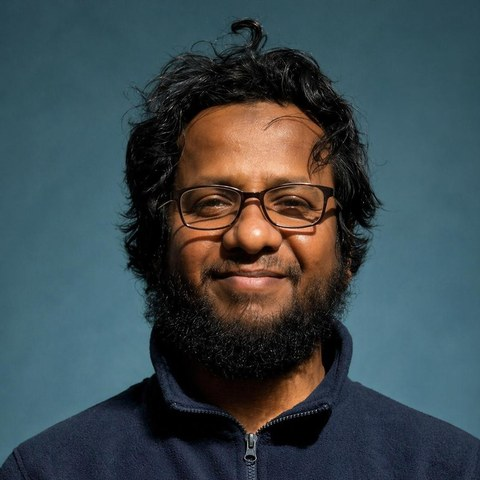

Shahriar Shakir Sumit
PhD Candidate in Computer Vision
School of Engineering and Technology, UNSW Canberra, Australia
I build vision systems that keep working when the world stops being tidy. Pedestrians half hidden behind a bus, a street scene at midnight, a detector that has to run on a small device with no second chances: these are the cases where standard models quietly fail, and they are the cases I care about most.
Lately I have also been asking a harder question of large models: when a vision-language model gets an answer right, did it actually look at the evidence? Much of my recent work builds careful tests for exactly that.
I am in the final year of my PhD, supervised by Dr Murat Tahtali and Prof. Seyedali Mirjalili, and I will submit my thesis in December 2026.
Open to opportunities
I am looking for postdoctoral research and lecturing or teaching positions starting in 2027. I enjoy work that sits between careful science and real deployment, and I have taught university classes since 2019. If your group or department works on computer vision, multimodal models or trustworthy AI, I would be glad to hear from you at m.sumit@unsw.edu.au.
What I work on
Detection in hard conditions
Finding people and objects under occlusion, low light and changing weather, and adapting frozen detectors to new conditions without retraining.
Small, fast models
Lightweight networks shaped by architecture search, distillation and pruning, so accurate detection fits on edge hardware.
Does the model really see?
Controlled tests that check whether vision-language models ground their answers in the right part of the image, or only guess well.
Trustworthy learning
Evaluation pitfalls in federated learning, world models and uncertainty estimates: places where a good score can hide a real failure.
News
- 2026Two papers accepted at WACV 2027: AAA-Bench, and visible-region attention for occluded pedestrians.
- 2026Two papers accepted at ACML 2026, to appear in PMLR volume 353.
- 2026Named a Top Reviewer at NeurIPS 2026.
- 2026HOD-Lite accepted for an oral presentation at KES 2026.
- 2026Awarded a UNSW Development and Research Training Grant.
- 2025Outstanding Reviewer at BMVC 2025, and fourth place in the UNSW Canberra Three Minute Thesis.
Publications
Recent work
- S. S. Sumit, M. Tahtali, S. Mirjalili. AAA-Bench: Counterfactual, Verifier-Grounded Evaluation of Vision-Language Models as Decision-Makers Under Visual Ambiguity. WACV 2027.
- S. S. Sumit, M. Tahtali, S. Mirjalili. Visible-Region Attention Supervision for Occluded Pedestrian Detection. WACV 2027.
- S. S. Sumit, M. Tahtali, S. Mirjalili. Controlled Evidence Interventions for Diagnosing Visual Grounding in Vision-Language Models. ACML 2026, PMLR 353.
- S. S. Sumit, M. Tahtali, S. Mirjalili. When TTA Meets Frozen Detectors: A Benchmark and Feature-Anchoring Solution for Streaming Object Detection. ACML 2026, PMLR 353.
- S. S. Sumit, M. Tahtali, D. Byrne, S. Mirjalili, A. Miroshnichenko, M. Garratt. HOD-Lite: An Enhanced Lightweight Human Object Detection Network via Neural Architecture Search, Knowledge Distillation and Pruning. KES 2026, oral.
- S. S. Sumit, S. Anavatti, M. Tahtali, S. Mirjalili, U. Turhan. ResNet-Lite: On Improving Image Classification with a Lightweight Network. Procedia Computer Science 246, 1488-1497, 2024.
- S. S. Sumit, S. Anavatti, M. Tahtali, S. Mirjalili, U. Turhan. KDVGG-Lite: A Distilled Approach for Enhancing the Accuracy of Image Classification. ACIIDS 2024, LNCS 14796, 15-27, Springer.
Where it started
- S. S. Sumit, D. R. A. Rambli, S. Mirjalili, M. S. U. Miah, M. M. Ejaz. ReSTiNet: An Efficient Deep Learning Approach to Improve Human Detection Accuracy. MethodsX 10, 101936, 2023.
- S. S. Sumit, D. R. A. Rambli, S. Mirjalili, M. M. Ejaz, M. S. U. Miah. ReSTiNet: On Improving the Performance of Tiny-YOLO-Based CNN Architecture for Applications in Human Detection. Applied Sciences 12(18), 9331, 2022.
- S. S. Sumit, J. Watada, F. Nasrin, N. I. Ahmed, D. R. A. Rambli. Imputing Missing Values: Reinforcement Bayesian Regression and Random Forest. In Soft Computing for Biomedical Applications and Related Topics, 81-88, Springer, 2021.
- S. S. Sumit, D. R. A. Rambli, S. Mirjalili. Vision-Based Human Detection Techniques: A Descriptive Review. IEEE Access 9, 42724-42761, 2021.
- S. S. Sumit, J. Watada, A. Roy, D. R. A. Rambli. In Object Detection Deep Learning Methods, YOLO Shows Supremum to Mask R-CNN. Journal of Physics: Conference Series 1529(4), 042086, 2020.
Seven more manuscripts are under review, on federated learning, world models, uncertainty and human detection.
Teaching
I have been in front of a classroom since 2019, first as a tutor in Malaysia and now as a casual lecturer in Canberra. I like teaching the way I like research: start from a concrete example, then build up to the idea behind it.
Path so far
Vision-based deep neural networks for object detection in complex scenes
Real-time human detection
Computer vision; graduate and research assistant
Recognition and funding
Awards
- Top Reviewer, NeurIPS 2026
- Outstanding Reviewer, BMVC 2025
- Fourth place, Three Minute Thesis, UNSW Canberra, 2025
- Best Presentation Award, SET and SYSCOM Conference, 2024
- Meritorious Master by Research Student Award, UTP, 2021
Grants and scholarships
- UNSW Development and Research Training Grant, AUD 3,000, 2026
- UNSW HDR funding for conferences and research, AUD 5,000, 2023
- UNSW Tuition Fee Scholarship and Research Stipend, 2023 to 2026
- NCI Australia supercomputing allocations, growing from 81 KSU in 2024 to 1.41 MSU in 2026
- Yayasan UTP Graduate Research Assistantship, 2020 to 2021
Talks and service
- Oral talk, KES 2026: HOD-Lite
- Three Minute Thesis, UNSW Canberra, 2025: "Lightweight AI: Detecting People When Every Second Counts"
- Reviewer for NeurIPS, BMVC, Artificial Intelligence Review, Information Sciences, Scientific Reports, IEEE Access and others
- Graduate Technologist, Malaysia Board of Technologists